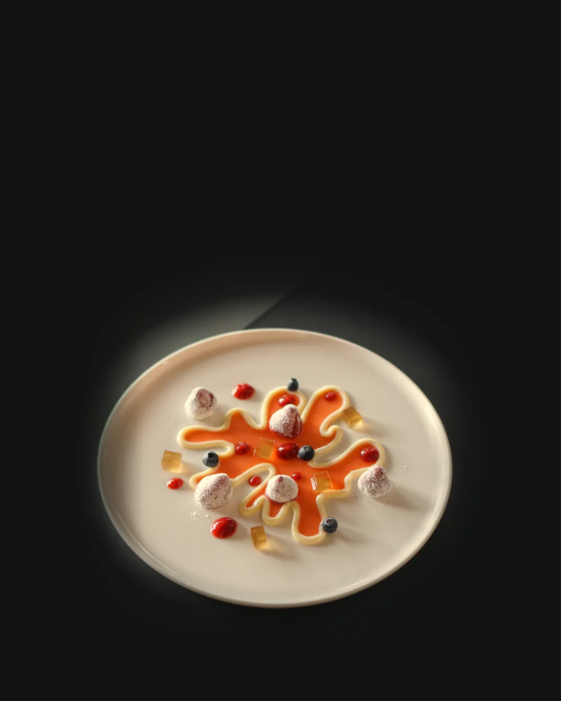
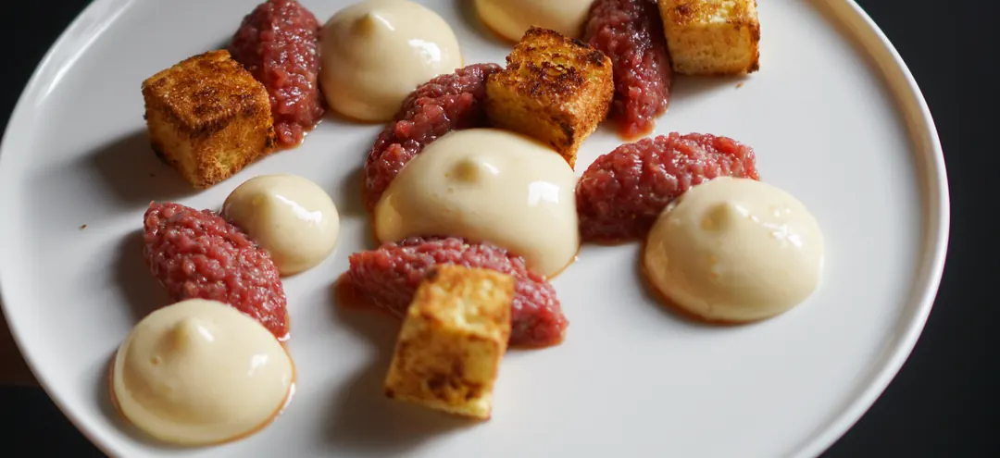
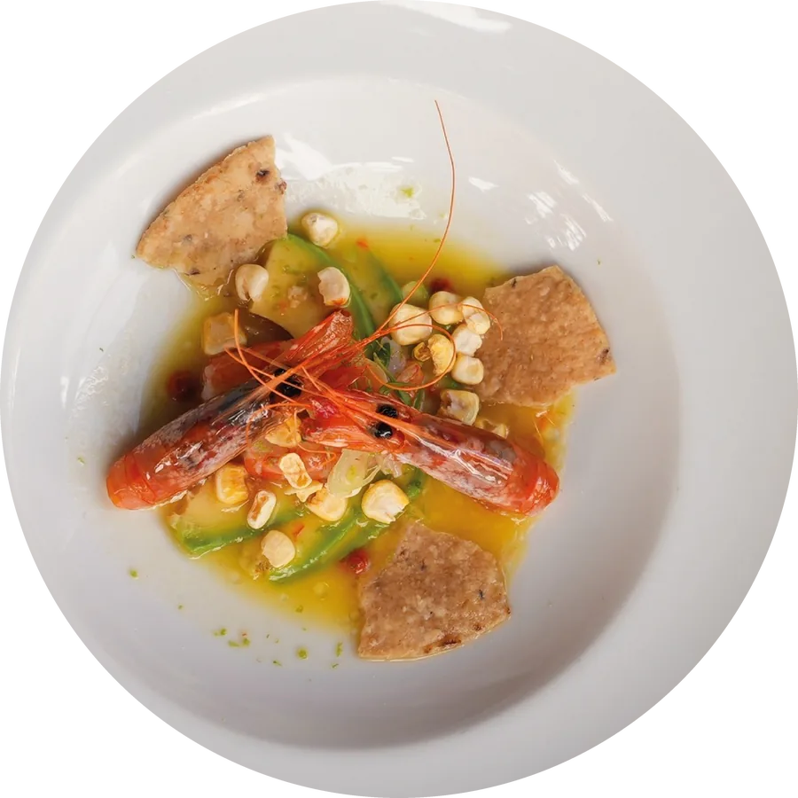
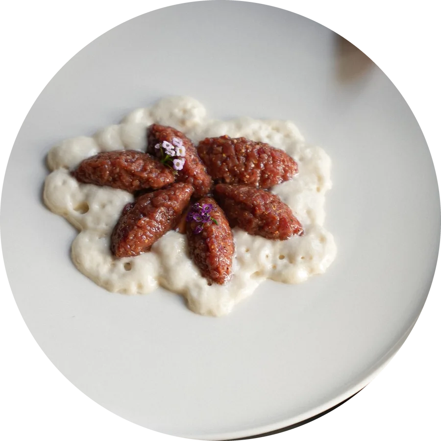
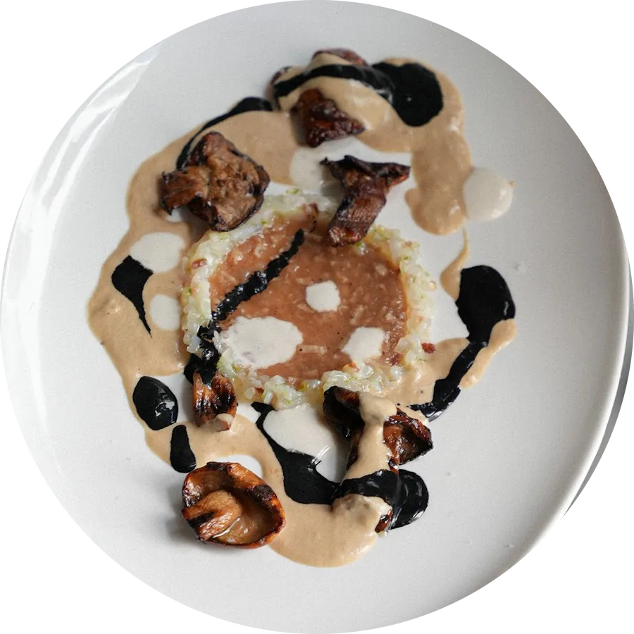
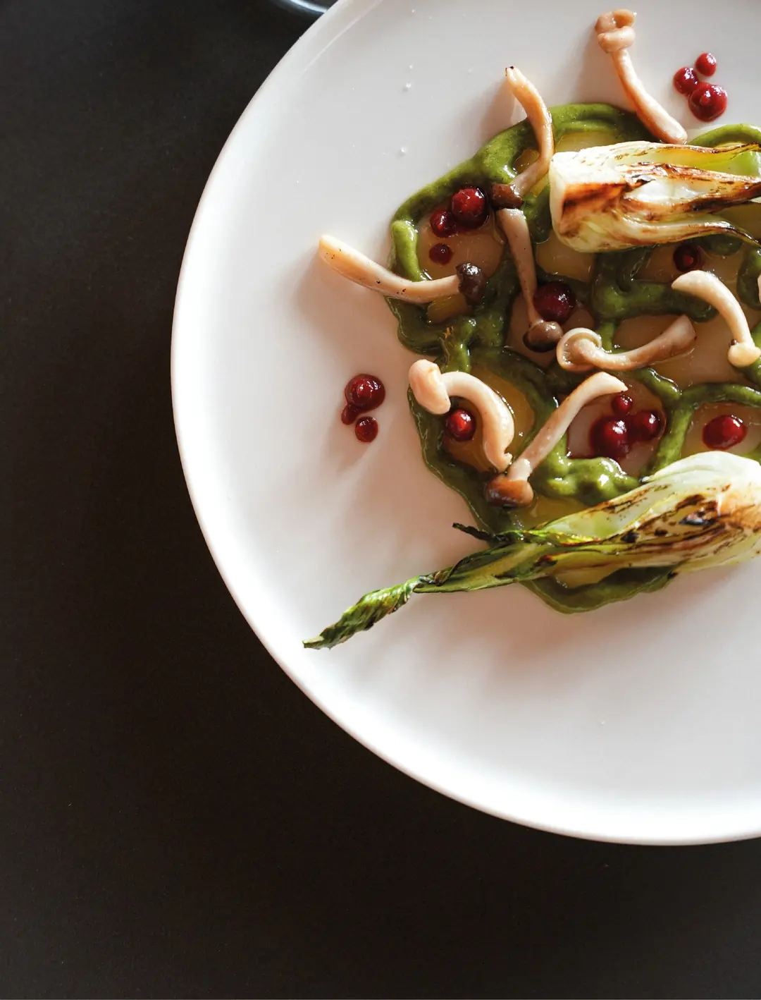
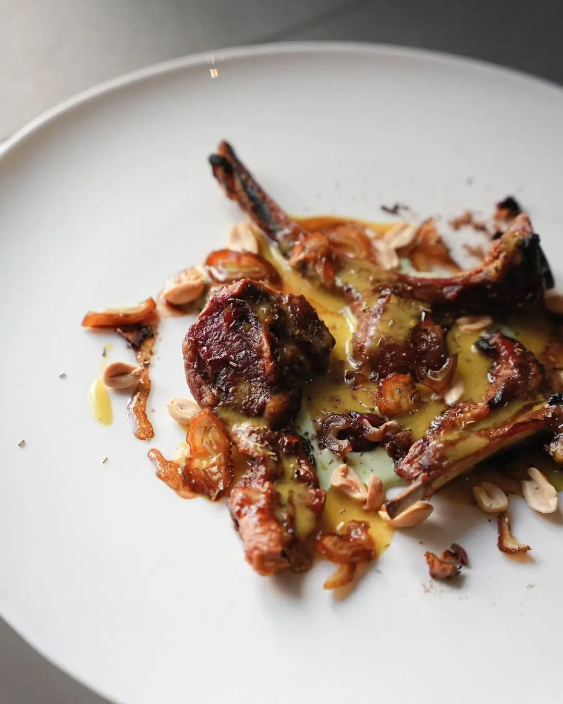
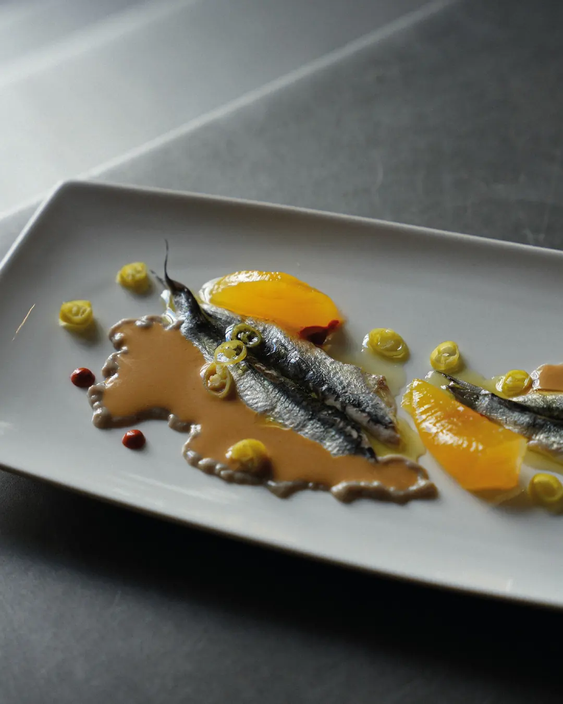
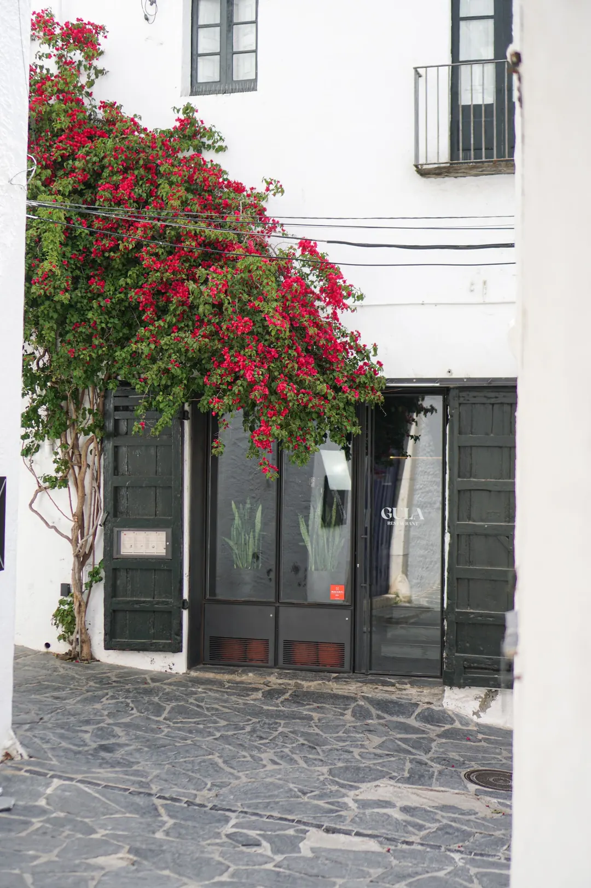

Gula, creative cuisine restaurant in Cadaqués. Creative cuisine with a Mediterranean soul.
- Tuesday to Sunday
- Carrer Horta d'en Sanés, 4
- +34 621 25 27 62

A kitchen that follows the seasons.
The menu never stands still: it changes with the season. What's at its best right now decides what leaves the kitchen.
Mushrooms in autumn, fish and seafood from the Mediterranean, garden vegetables at their peak. Every dish is built in layers, with fire, stocks and sauces that take time and craft.
On the menu now
-

Mango ceviche
Red prawn, avocado and corn
-

Steak tartare
Hand-cut, with txuletón fat
-

Squid tartare
Porcini cream, grilled cep and ink sauce
From our kitchen
-

Scallop sashimiGreen curry, beetroot, pak choi and shimeji -

Grilled lambTzatziki, curry sauce, dates and peanuts -

Marinated anchoviesOlive, piparra pepper and orange
Seasonal menu (PDF)
An intimate dining room in the heart of Cadaqués.
A few tables, warm light and attentive service that walks you through every dish.
Tucked down an alley that opens onto the sea, Gula takes Mediterranean tradition to high-level cooking with Asian touches. Delicate dishes, first-rate produce and precise cooking, in a modern space in one of the most beautiful corners of Cadaqués, made for taking your time.
Guía Repsol 2026 Recommended (opens in a new tab)«Una cocina de alto nivel que actualiza la tradición mediterránea»
Guía Repsol 2026
Once, the kitchen of a village house.
Gula lives in an old village house in Cadaqués. Its everyday kitchen is now the heart of the restaurant: everything that reaches your table is cut, cooked and plated right here.
- An old village house
- A dining room for few
- Steps from the sea
Book
Book your experience.
Online, on WhatsApp or on Instagram. Whatever suits you.
Fill this in and we'll open WhatsApp with the message ready. We'll confirm your table.
Message us on Instagram
Send us a direct message with the day, time and number of guests, and we'll confirm your table.
Open Instagram (opens in a new tab)How to find Gula
In the centre of Cadaqués, down an alley a few steps from the sea.

- Address
- Carrer Horta d'en Sanés, 4
17488 Cadaqués, Girona - Phone
- +34 621 25 27 62
Frequently asked questions
Where is Gula restaurant?
At Carrer Horta d'en Sanés, 4, in the centre of Cadaqués (Girona), a few steps from the sea.
What kind of food does Gula serve?
Creative Mediterranean cuisine with Asian accents: local, seasonal produce, fish and meat cooked over the coals and a menu that changes every season. Gula is recommended in the Guía Repsol 2026.
Do I need to book?
It's highly recommended, as the dining room is small. You can book online, on WhatsApp, on Instagram or by calling +34 621 25 27 62.
What are the opening hours?
Thursday to Sunday: lunch 13:00-15:15 and dinner 20:00-22:30. Tuesday and Wednesday: dinner 20:00-22:30. Monday: closed. Hours may vary by season.
What is the average price?
According to the Guía Repsol, between €35 and €60 per person.
What if I have allergies or intolerances?
Let us know when you book or tell our floor team before ordering.